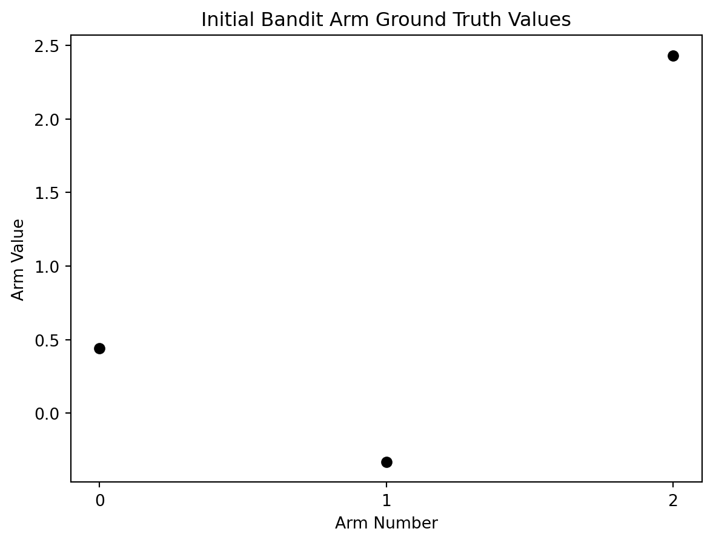
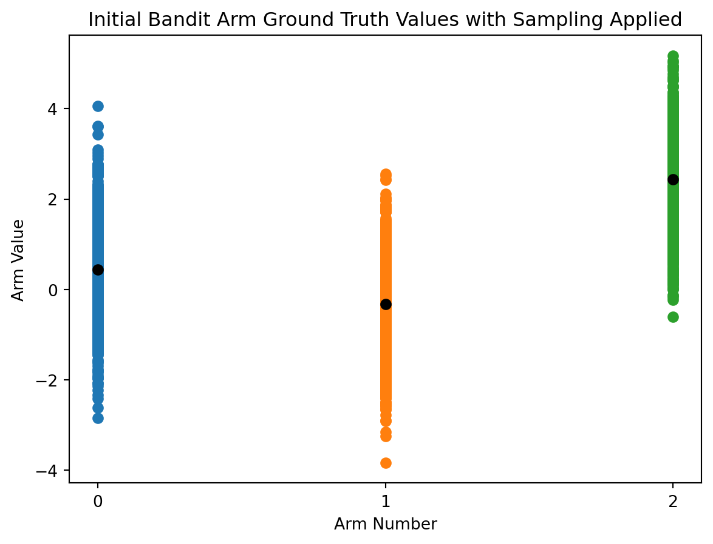
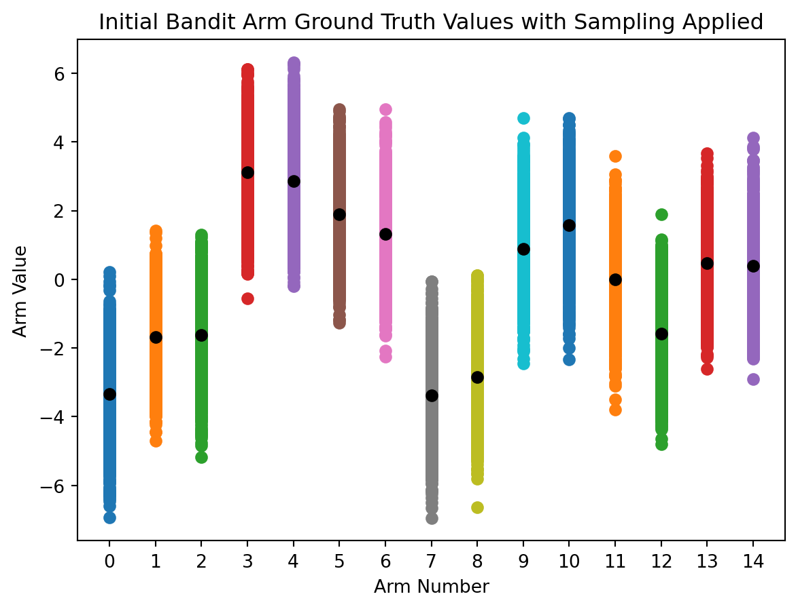

Learn how to create a simple N-armed bandit and train an RL agent to its optimal policy and value function.
Creating an n-armed bandit
Defining a bandit
A bandit represents an environment, a set of rewards, and a set of actions.
For example, a one armed bandit has one possible action (one “arm” or lever) in its environment and pulling that arm generates one set of rewards–typically as a randomly generated number between two set intervals such as 0 and 1.
Why bandits?
RL agents use evaluation methods to dictate what actions it takes, instead of instruction from a combination of loss/reward/etc. functions.
Guiding an RL agent through evaluative feedback will help it understand which actions provide the most reward but doesn’t specify which action provides the best or worst outcomes.
Bandits allow us to create simple test beds for training RL agents in. An RL agent must learn to maximize total reward when interacting with the bandit given a number of action selections.
If your bandit has three arms and the RL agent can choose to pull one of those three levers 1000 times–which combination of lever pulls will lead to the highest possible reward? An effective RL agent should learn the optimal sequence of when and which levers to pull.
Providing bandit actions a value
In life and in RL, if we had a perfect understanding of the short and long term value tied to an action we would be able to exploit that to our advantage.
Let’s create some perfect ground truth values for a three armed bandit.
import numpy as npimport matplotlib.pyplot as plt# assign a random starting seed valuenp.random.seed(5)# basis for generating the reward ground truthsmean =0# also known as mustandard_deviation =1# also known as sigmaarms =3# bandit valuesaction_range = np.arange(0, arms)reward_truths = np.random.normal(mean, standard_deviation, (arms))total_actions_allowed =1000# plot initial ground truth valuesplt.plot(action_range, reward_truths, 'o', color='black')# plot detailsplt.xlabel('Arm Number')plt.ylabel('Arm Value')plt.xticks(range(0,arms))plt.title('Initial Bandit Arm Ground Truth Values')plt.show()

Unfortunately, we don’t have perfect knowledge so we as agents must do our best to estimate the reward value of an action before we take it.
We can’t provide a static ground truth value for a bandit arm or else a greedy RL agent will always be able to quickly solve the problem in a way that doesn’t replicate real world situations.
A better action-value method
A good bandit arm should be assigned a set reward value to act as the ground truth, a range of possible reward values to pull from anchored on the ground truth, and the resulting reward should be randomly sampled from that range when the arm gets pulled.
I like to think of this as applying a standard deviation error bar to your starting point.
# apply a standard deviation error bar to the ground truth valuesplt.errorbar(action_range, reward_truths, np.ones(arms), fmt='o')# plot detailsplt.xlabel('Arm Number')plt.ylabel('Arm Value')plt.xticks(range(0,arms))plt.title('Initial Bandit Arm Ground Truth Values with Deviation Range')plt.show()plt.show()
In implementation, the agent will use a properly sampled distribution of actions and not a deviation bar.
Let’s update the the visualization of each bandit arm with 1000 sampled data points to better capture these good practices.
# for each arm's reward truth, generate distribution between 1 and total_actions_allowedreward_ranges = np.array([np.random.normal(true_reward,1,total_actions_allowed) for true_reward in reward_truths])# plot scatter points representing the sampled value range centered on ground truth valuefor i in action_range: plt.scatter(np.full((total_actions_allowed),i),reward_ranges[i])# plot ground truth rangesplt.plot(action_range, reward_truths,'o', color='black')plt.xlabel('Arm Number')plt.ylabel('Arm Value')plt.xticks(range(0,arms))plt.title('Initial Bandit Arm Ground Truth Values with Sampling Applied')plt.show()

For each additional bandit arm we add, the same process will occur. Check out a 15 arm bandit, with twice the standard deviation, that as 2000 total action “time steps”.
# updated bandit valuesarms =15standard_deviation =2action_range = np.arange(0, arms)reward_truths = np.random.normal(mean, standard_deviation, (arms))total_actions_allowed =2000# for each arm's reward truth, generate distribution between 1 and total_actions_allowedreward_ranges = np.array([np.random.normal(true_reward,1,total_actions_allowed) for true_reward in reward_truths])# plot scatter points representing the sampled value range centered on ground truth valuefor i in action_range: plt.scatter(np.full((total_actions_allowed),i),reward_ranges[i])# plot ground truth rangesplt.plot(action_range, reward_truths,'o', color='black')plt.xlabel('Arm Number')plt.ylabel('Arm Value')plt.xticks(range(0,arms))plt.title('Initial Bandit Arm Ground Truth Values with Sampling Applied')plt.show()

The wider range of values to sample from and increased number of arms increase the complexity, thereby making it harder for the agent to find the optimal value function.
Next up
Now that we know how to create a simple n-armed bandit, we need to build an RL agent capable of maximizing reward during interactions.
Stay in touch
You can email me at ogjaylowe@gmail.com and follow, or DM, me on Twitter!
If you enjoyed this post, then don't miss out on any future posts by subscribing to my email newsletter.
TODO - get hooks set up proper and style with theme, add site map and other footer optimizations